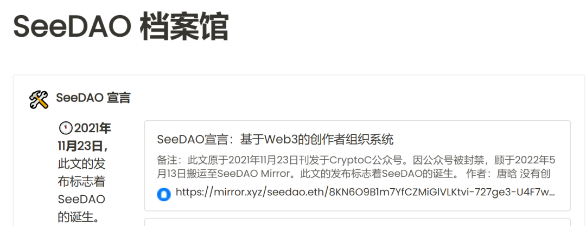
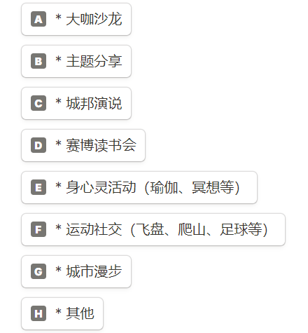
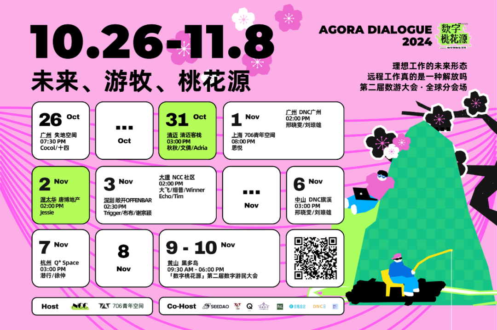
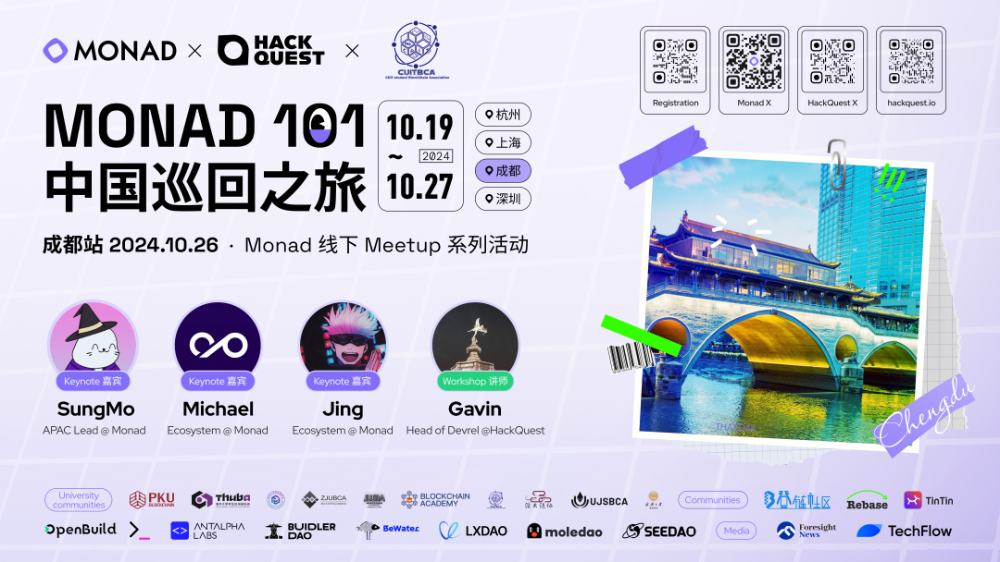
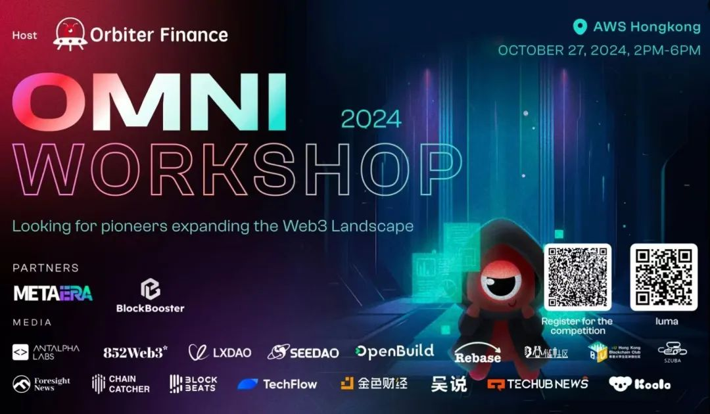

注：本文宣发「城邦庆生」吃蛋糕城市&其它生态项目周末活动城市。
2021 年 11 月23 日，《SeeDAO宣言：基于 Web3 的创作者组织系统》宣告 SeeDAO 正式诞生。
将近三年的发展进程中，SeeDAO从社区到数字城邦，成员发展至 1.2 万人，贡献者超过 2000 人，核心贡献者接近 550 人。

今年10月10日起，全球各个城市的SeeDAO成员陆续组织「城邦庆生三周年」线下聚会活动。城邦庆生第一波：四城线下观影《Vitalik:以太坊的故事》
香港：10月10-11日两晚
成都：10月18日星期六
深圳和武汉：10月19日星期日
城邦庆生第二波：线下吃蛋糕或其它主题活动
上海：10月26日星期六下午三点 线下小聚火锅与蛋糕
清迈古城：10月31日星期四下午三点 数字游民桃花源分享会
11月：曼谷、台北 & 大理 （具体时间稍后通知)

国库支持: 每场活动经费 100U 实报实销
组织者：SNS成员+5000积分 或 SNS成员+Seed 或 S8节点推荐
组织激励：活动人数30位或以下 3000积分；30位或以上 6000积分；
品牌支持：协助内容撰写与全平台宣发；在地网络社群；
海内外14个线下空间供参选&合作：https://seeu.network/space
活动负责：文倩 微信+ sanllywang
图片：第二届数字游民大会
02

邀请资深专家和成功项目团队，分享生态洞察、项目成功经验和具体实践策略
⏰ 时间：10月27日下午
👥分享预告 a、TON生态进阶探讨
b、解析TON上流量增长
c、TON生态内的商业模式转型与解决方案
d、如何在TON生态上构建百万用户量级应用
🔗报名链接：https://lu.ma/o7ilowhx
Blocktober 和 HongKongFintechWeek 期间，Orbiter Finance 将推出以下三场活动，欢迎报名omni workshop只需一个创业想法就能赢取万元奖金～一起探索Web3 的无限可能！
A.「Omni Workshop：寻找拓展 Web3 版图的先行者」
秀出你的创意想法，与业内同行和黑客松伙伴们同台竞技，赢取丰厚奖金。
活动报名：https://lu.ma/5354661h
项目路演报名：https://forms.gle/naTwTZM37ne3tMEu6
B.「Omni Seminar」
在这场研讨会上与 Web3 领袖一起交流 ZKEVM 和以太坊可扩展性的未来。
活动报名：https://lu.ma/5ghcu7v3
C.「VIP Omni Yacht」
独家游艇聚会将创始人、风险投资人和思想领袖聚集在一起，度过一个交流与合作的夜晚。
🔗 活动报名：https://lu.ma/rywaucz2
